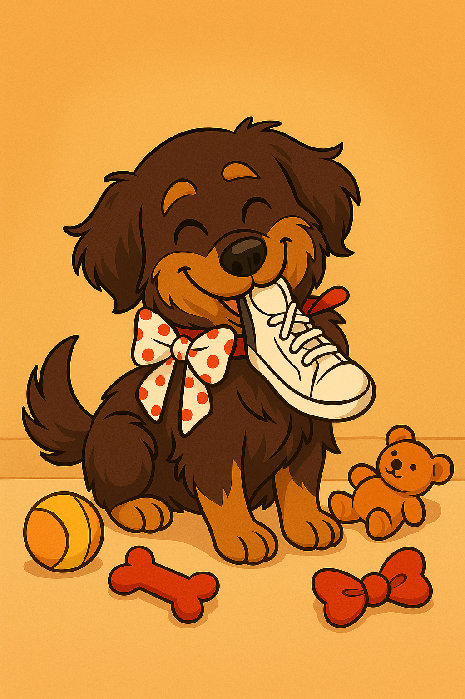
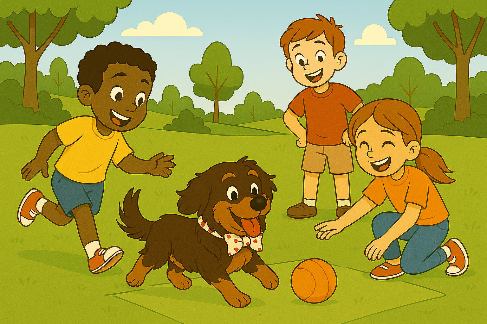

El Mundo de Tanyi
 ← Volver a "Huellas de Tabatha"
← Volver a "Huellas de Tabatha"
← Volver a "Huellas de Tabatha"
← Volver a "Huellas de Tabatha"


Cuando el cachorrito ya estaba seco y calentito, "Meli" le dio un poquito de leche con un gotero.
- Que bueno, le gusta y parece que le hace bien.
Luego puso una manta suave junto a su cama para acostar al cachorrito y, aunque en la noche se despertaba con pequeños quejidos, "Meli" le hablaba suavemente y lo acariciaba hasta que se volvía a dormir.
Al día siguiente, "Meli" llevó al cachorrito al veterinario. Allí lo revisaron con cuidado y confirmaron que, aunque estaba un poquito débil, su salud era buena, y descubrieron que era una linda perrita.
Movía su colita con gratitud y ya empezaba a sentirse más segura. "Meli" sonrió aliviada sabiendo que tendría una segunda oportunidad.


